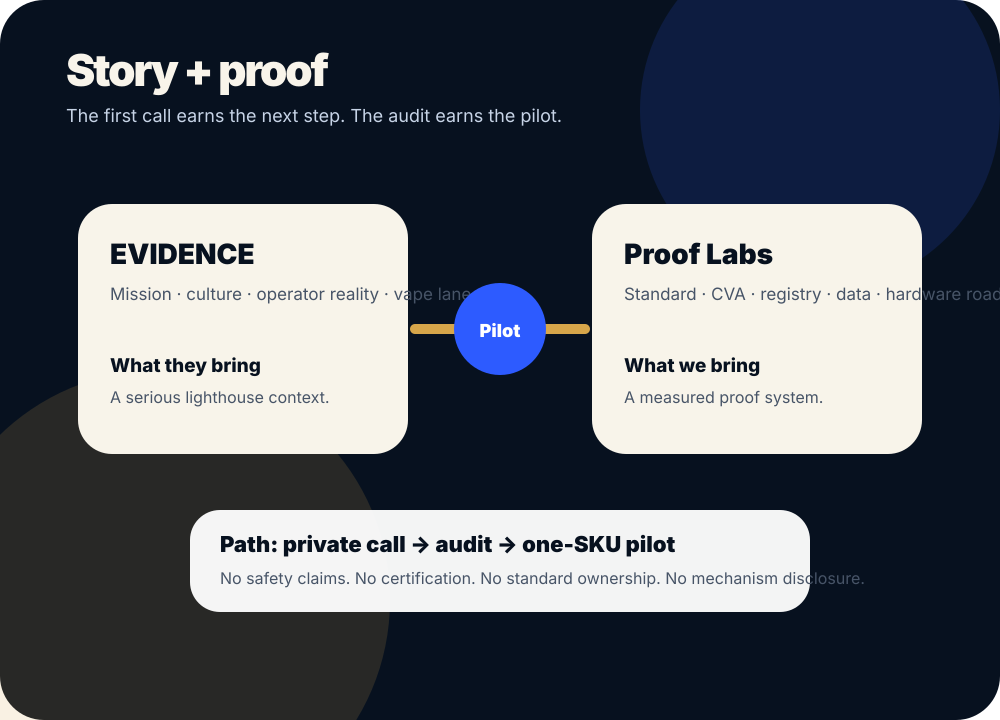

EVIDENCE has the story. Proof Labs brings the vapor proof system.
A private proposal to evaluate whether EVIDENCE could become the right lighthouse partner for a Proof Vapor Audit and one-SKU Proof Vapor Standard pilot.
Mission deserves proof.
Proof Labs is not pitching another cartridge, safety claim, or celebrity-first launch. The first ask is a private operator reality-check call. If there is fit, the first commercial step is a narrow, paid Proof Vapor Audit.
- Private call first.
- No mechanism disclosure.
- No public claims.
- No ownership of the standard.
- Audit before pilot.

The path
Every step earns the next step. Nothing public happens until data, counsel, partner review, and claim controls support it.
Private operator reality-check call
Pressure-test whether vapor-path proof matters to EVIDENCE’s current or future product lane.
Proof Vapor Audit
Review material path, heating element, current COA/test stack, supplier claims, and CVA gap.
One-SKU PVS pilot
Define one device/oil system, one test matrix, one internal report, and a public-safe CVA only if data supports it.
Future hardware/culture launch
Only after proof, IP, legal, partner, and claim gates support it.